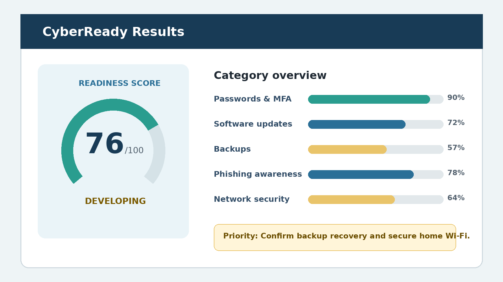

Readiness score
A 0 to 100 overview reflects the current practices reported in the assessment.
Cybersecurity readiness assessment
CyberReady uses plain-language questions to help individuals and small organizations review everyday security practices and identify practical next steps.
Educational self-assessment. Do not enter passwords, authentication codes, or other sensitive information.
Know your posture. Strengthen your defenses.
What users receive
CyberReady turns assessment responses into information users can understand without advanced security terminology.
A 0 to 100 overview reflects the current practices reported in the assessment.
Results show strengths and gaps across seven common cybersecurity topics.
Recommendations place missing practices before items that only need verification.

Designed for everyday decisions
Assessment coverage
The prototype focuses on baseline practices that can reduce common risks for home users and small organizations.
Unique credentials and secure password management.
Additional verification for important accounts.
Timely operating system, browser, application, and firmware updates.
Protected copies and tested recovery of important information.
Recognition, verification, and reporting of suspicious messages.
Screen locks, security tools, encryption, and appropriate privileges.
Secure Wi-Fi, changed router credentials, and safer remote connections.
The assessment takes about 5 to 10 minutes. Answer based on current behavior and choose “Not sure” whenever a setting or practice needs verification.